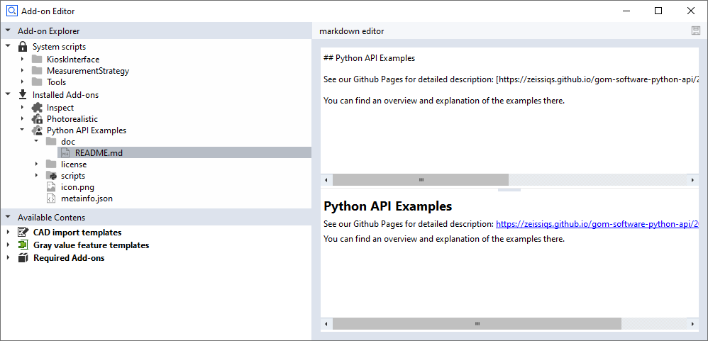

Documenting Add-ons
üí° The add-on documentation is part of the packaged add-on.
Terminology

Index |
Item |
Description |
Origin |
|---|---|---|---|
1 |
Title |
Add-on title |
‘Title’ field in the add-on. Set during add-on creation. |
2 |
Company |
Company the add-on is maintained by |
Company the uploading account belongs to. |
3 |
Add-on description |
Add-on short description |
‘Description’ field in the add-on. Set during add-on creation. |
4 |
Splash description |
Some information about the add-on, e.g. for advertising it |
doc/README.md from the add-on. See below how to edit it. |
5 |
Link to complete documentation |
Complete add-on documentation |
Something referenced from within the doc/README.md. Can be a PDF, a link to some external site, … |
Add-on structure
An add-on file is technically a ZIP file.
It must at least contain a file
doc\README.md, which will be rendered as the product’s splash description ad.It can contain an arbitrary number of additional files in the
docfolder referenced from within theREADME.mdfile.
Example
Documentation related content of the add-on ‘Python API Examples’:

The README.md is the starting point for rendering the add-ons splash description and will reference all other files:

This will result in the following splash description:

Markdown
Note
See markdown guide for a brief description of the markdown format.
See ZEISS Industrial Quality Suite → Store → Python API Examples for example.
 A markdown editor/viewer is integrated in the ZEISS INSPECT Add-on editor.
Portable Document Format (PDF)
The standard expression to reference a PDF from doc/README.md is:
See PDF for detailed description: [PDF](README.pdf)